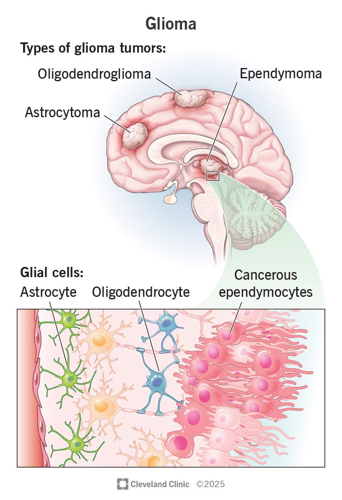

1. Use case I: SNV and CNV calling from Whole exome sequencing data#
1.1. Background#
Whole-exome sequencing (WES) is widely used in clinical and translational genomics to interrogate coding regions of the genome and identify clinically relevant variants. Key applications include:
Rare Disease Diagnosis: Rapid detection of pathogenic variants in undiagnosed genetic disorders, reducing diagnostic odysseys.
Cancer Genomics: Profiling somatic and germline mutations to guide targeted therapy and risk assessment. 3. Carrier Screening: Identifying recessive mutations in prospective parents for reproductive planning. Pharmacogenomics: Assessing drug-response variants to optimize treatment regimens.
WES improves diagnostic yield while remaining more cost-efficient than whole-genome sequencing in many clinical settings.
The ClinDet WES workflow supports whole-exome, panel, and targeted DNA sequencing data. It performs somatic and germline variant calling, supports both paired tumor-normal and tumor-only analyses, and integrates multiple tools for detecting single nucleotide variants (SNVs), small insertions and deletions (INDELs), copy-number variants (CNVs), and structural variants (SVs), followed by quality control and downstream reporting.
In this example, we use ClinDet to analyze whole-exome sequencing samples from the publicly available Chinese Glioma Genome Atlas (CGGA) dataset. Reads are aligned to the human b37 reference genome, followed by somatic mutation and copy-number analysis.
{kind=link}

1.2. Why this case matters#
This case serves as a practical paired-WES example for clinical cancer genomics. It demonstrates how ClinDet can combine multiple somatic callers, germline callers, and CNV tools in a single analysis, while still keeping the configuration compact enough for routine project-level use.
1.3. Setup a project folder#
Note
Before starting the analysis, please ensure that you have set up the analysis environment using the build_conda_envs.sh script.
Create a folder named project/CGGA_WES in your home directory and activate the Clindet conda environment.
mkdir -p ~/projects/CGGA_WES
cd ~/projects/CGGA_WES
conda activate clindet
1.4. Download data and prepare the sample sheet#
Download data from the GSA database using wget and prepare the sample information file.
cd ~/projects/CGGA_WES
mkdir -p data && cd data
## sample CGGA_D14 tumor-sample paired fqs
wget -c --no-check-certificate -O T_CGGA_D14_r1.fq.gz https://download.big.ac.cn/gsa-human/HRA000071/HRR025119/HRR025119_f1.fq.gz
wget -c --no-check-certificate -O T_CGGA_D14_r2.fq.gz https://download.big.ac.cn/gsa-human/HRA000071/HRR025119/HRR025119_r2.fq.gz
wget -c --no-check-certificate -O B_CGGA_D14_r1.fq.gz https://download.big.ac.cn/gsa-human/HRA000071/HRR024833/HRR024833_f1.fq.gz
wget -c --no-check-certificate -O B_CGGA_D14_r2.fq.gz https://download.big.ac.cn/gsa-human/HRA000071/HRR024833/HRR024833_r2.fq.gz
## sample CGGA_653 tumor-sample paired fqs
wget -c -O T_CGGA_653_r1.fq.gz ftp://download.big.ac.cn/gsa-human/HRA000071/HRR025103/HRR025103_f1.fq.gz wget -c -O T_CGGA_653_r2.fq.gz ftp://download.big.ac.cn/gsa-human/HRA000071/HRR025103/HRR025103_r2.fq.gz
wget -c -O B_CGGA_653_r1.fq.gz ftp://download.big.ac.cn/gsa-human/HRA000071/HRR024817/HRR024817_f1.fq.gz
wget -c -O B_CGGA_653_r2.fq.gz ftp://download.big.ac.cn/gsa-human/HRA000071/HRR024817/HRR024817_r2.fq.gz
Next, create a CSV file named pipe_wes.csv in the ~/projects/CGGA_WES directory with the following content:
Tumor_R1_file_path,Tumor_R2_file_path,Normal_R1_file_path,Normal_R2_file_path,Sample_name,Target_file_bed,Project
/AbsoPath/of/projects/CGGA_WES/data/T_CGGA_D14_r1.fq.gz,/AbsoPath/of/projects/CGGA_WES/data/T_CGGA_D14_r2.fq.gz,/AbsoPath/of/projects/CGGA_WES/data/B_CGGA_D14_r1.fq.gz,/AbsoPath/of/projects/CGGA_WES/data/B_CGGA_D14_r2.fq.gz,CGGA_D14,/AbsoPath/of/target.bed,CGGA_WES
/AbsoPath/of/projects/CGGA_WES/data/T_CGGA_653_r1.fq.gz,/AbsoPath/of/projects/CGGA_WES/data/T_CGGA_653_r2.fq.gz,/AbsoPath/of/projects/CGGA_WES/data/B_CGGA_653_r1.fq.gz,/AbsoPath/of/projects/CGGA_WES/data/B_CGGA_653_r2.fq.gz,CGGA_653,/AbsoPath/of/target.bed,CGGA_WES
1.5. Prepare the target BED file#
For WES and targeted panel analyses, you must provide a BED file that defines the capture regions and matches the reference genome version (e.g., b37 or hg38). This file is referenced in the Target_file_bed column of the sample sheet.
If a BED file from your capture kit is available, it should be provided by the sequencing company. Make sure it uses the same chromosome naming convention as your reference genome (e.g.,
1for b37,chr1for hg38).If no BED file is available, you can generate one from a GTF annotation file using the method described in Setup Clindet → Generate a BED File for WES Analysis. ClinDet also provides a reference BED file for the b37 genome and a script
gtf2bed.Rto create your own.
Note
An incorrect or mismatched BED file will cause coverage-related downstream steps (e.g., CNV calling) to produce unreliable results. Verify that the BED coordinates match your target regions and genome version before running the analysis.
1.6. Prepare the YAML workflow config#
In the current workflow, you no longer need to create a project-specific snake_wes.smk file. Instead, prepare a YAML configuration file and pass it to Snakemake with --configfile.
For this example, create test/CGGA_config.yaml and update the following fields:
project.output_dir: output directory for this analysis.project.genome_version: reference genome version, such asb37.project.recal_BQSR: whether to run BQSR. SetFalseto skip it.project.vcf2maf: VCF-to-MAF mode.project.sample_sheet: absolute path to the sample sheet CSV file.run_params.somatic_caller_list: somatic SNV/INDEL callers to run.run_params.stages: workflow stages to run, for exampleconpair,call_mut, andreport.run_params.germ_caller_list: germline callers to run.run_params.somatic_cnv_list: somatic CNV callers to run.run_params.somatic_sv_list: somatic SV callers to run.run_params.tumor_only_callerandrun_params.tumor_only_cnv_caller: callers used for tumor-only samples.run_params.purple_sv: SV caller used by PURPLE-related downstream steps.
Note
project:
output_dir: 'test'
genome_version: 'b37'
recal_BQSR: False
vcf2maf: 'raw'
sample_sheet: '/public/ClinicalExam/lj_sih/projects/project_clindet/data/CGGA_primary_sample_info.csv'
run_params:
somatic_caller_list:
- HaplotypeCaller
- strelkasomaticmanta
- cgppindel
- caveman
- muse
- Mutect2
stages:
- conpair
- call_mut
germ_caller_list:
- sage
- caveman
somatic_cnv_list:
- defulet
- ASCAT
- facets
somatic_sv_list:
- BRASS
- delly
- gridss
- igcaller
- linx
- svaba
- Manta
tumor_only_caller:
- sage
tumor_only_cnv_caller:
- freec
purple_sv: "gridss"
1.7. Configuration rationale#
This YAML configuration is designed for a paired WES cancer cohort. We keep genome_version=b37, disable recal_BQSR to reduce runtime, and use call_mut together with conpair so that both somatic calling and sample-pair quality checks are performed. The selected somatic callers provide complementary support for SNV/INDEL discovery, while ASCAT and facets are retained as CNV methods commonly used in exome-based tumor-normal analyses.
1.8. Run clindet#
There are two ways to run ClinDet in this example:
run on a local node
submit to HPC through slurm
1.8.1. Run on local node#
After preparing the YAML config, you can run the analysis on a local node with:
snakemake -c 30 --config run_type=wes \
--configfile test/CGGA_config.yaml \
--rerun-triggers mtime --benchmark-extended \
--use-singularity --singularity-args "--bind /your/home/path:/your/home/path" \
--latency-wait 300 --use-conda --conda-frontend conda -k
1.8.2. Submit to HPC use slurm#
We provide a Slurm config.yaml file under the clindet/workflow/config_slurm folder. When submitting jobs, users can specify the partition parameter in the YAML file to the desired node name according to their needs.
executor: cluster-generic
cluster-generic-submit-cmd:
mkdir -p logs/{wildcards.project}/slurm &&
sbatch
--partition=SVC
--cpus-per-task={threads}
--job-name={rule}
--output=logs/{wildcards.project}/slurm/{wildcards.sample}_{rule}.%N.%j.out
default-resources:
- partition=SVC
latency-wait: 60
jobs: 50
keep-going: True
rerun-incomplete: True
printshellcmds: True
scheduler: greedy
use-conda: True
After preparing the YAML config, run the analysis with the following command:
nohup snakemake --config run_type=wes \
--configfile test/CGGA_config.yaml \
--profile workflow/config_slurm \
-j 30 --printshellcmds --rerun-triggers mtime --benchmark-extended \
--use-singularity --singularity-args "--bind /your/home/path:/your/home/path" \
--latency-wait 300 --use-conda --conda-frontend conda -k >> CGGA.out &
1.8.3. Output#
1.8.4. Overview of output#
After success run, you will get the all the results under {project}/{genome_version}/results folder.
/WES/b37
├── logs
│ └── paired
└── results
├── cnv **# Copy Number results**
├── dedup **# deduplication BAM files**
├── logs **# Task run logs**
├── maf **# annotation somatic mutation MAF files**
├── maf_germline **# annotation germline mutation MAF files**
├── mapped **# annotation somatic mutation MAF files**
├── multiqc **# annotation somatic mutation MAF files**
├── multiqc_data
├── multiqc_report_data
├── multiqc_report.html
├── qc **# QC results for fastp conpair and so on**
├── recal **# BAM files after base recalibration**
├── report **# Case report files**
├── stats **# BAM statistics info**
├── trimmed **#temporary trimmed fastq and fastp output**
├── vcf **# RAW somatic mutation VCF files**
└── vcf_germline **# RAW germline mutation VCF files**
1.8.5. What to expect#
For this case, the most informative outputs are the merged somatic MAF files, the CNV results from ASCAT and facets, and the QC outputs produced during paired-sample processing. Successful completion should allow readers to compare somatic calls across samples, inspect broad copy-number patterns, and confirm that the tumor-normal pairing behaves as expected.
1.9. Common pitfalls#
sample_sheetshould be an absolute path and must point to files visible inside the Singularity bind mount.genome_versionin the YAML file must match the reference resources configured in the globalconfig.yaml.Target_file_bedshould be set correctly for each WES sample, otherwise coverage-aware downstream steps may not behave as expected.If
conpairis enabled, tumor and matched normal samples must be correctly paired in the sample sheet.
1.9.1. case report#
There is a example case report of CGGA_P438 example report HTML